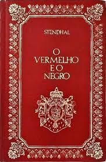

O Vermelho e o Negro de Stendhal

O vermelho e o negro conta a história de Julien Sorel, um jovem pobre e talentoso que, nos convulsivos anos de 1830, deixa para trás sua origem provinciana para circular entre as altas esferas da sociedade parisiense.
Preço com a capa comum R$37,90
voltar